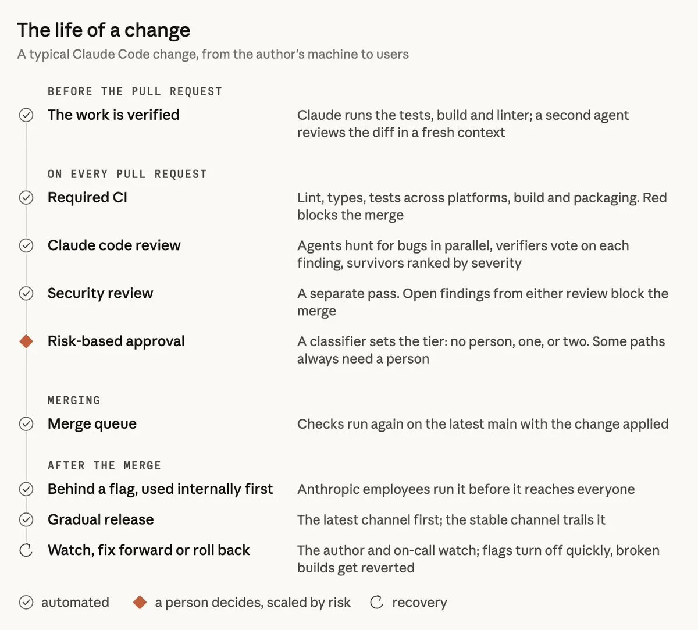

六層過濾＋一道回滾：Claude Code 團隊怎麼審自己寫的碼
導讀原文：X Article〈How the Claude Code team does code review〉——Claude Code 團隊第一人稱的流程自述，由 @addyosmani 帳號發布
Claude 寫掉約九成程式碼之後，Claude Code 團隊沒有停掉 code review，而是把大部分「閱讀」自動化，只留一個風險分級的人類批准點。

母體規模：monorepo 五月每天約 2,500 個變更，九月超過 30,000 個（Claude Code 不在其中）。逐行審查越來越難，甚至不可能。
觀點 triage。主語是「Claude Code 團隊」：內文第一人稱自述，文末自註是改寫自團隊原文。發布端 @addyosmani 與團隊的關係原文未說明，不併為作者。這是自我報告：數字為內部量測、未附方法論，文章同時在推銷已開放的 Code Review 產品。
誰能放行：四種「未結案」狀態
這個 PR 現在卡在哪一關？
本站整理；原文未給此決策圖，四類並非互斥，條件出自原文。
風險層級由變更本身決定，不是作者身分；第二個分類器還能把個別變更加嚴。原文的風險分級最低可到不需任何人批准（0 人、1 人或 2 人），這是整套設計裡最該被追問的一格。
留給人的五項：要不要做、審危險碼、架構、驗證證明、承擔責任。「說不出檢查會漏掉什麼，就別求 👍」
哪些是量測、哪些是護欄
人類時間是雙側成本——審查花掉的時間，加上修壞碼引入 bug 的時間。只壓前者，等於把成本搬家。
| 主張 | 數字與限定 | 這是哪種證據 |
|---|---|---|
| 審查沒讓品質變差 | 6–9 月合併 PR 數「2 倍以上」；需 revert 的 PR 占比降「逾 40%」 | 內部量測（未附方法）；revert 率同時是護欄 |
| AI 審查真的在給意見 | 獲實質審查意見的內部 PR 從 16% 到 54%（研究預覽以來）；>1,000 行的 PR 多數被抓到問題，較小的多數乾淨 | 內部量測；看的是「實質」而非有無留言 |
| 驗證流程值 2–3 倍 | Claude 產出品質「提升到 2–3 倍」——Boris Cherny 的估計 | 估計，不是量測：無基準、無樣本 |
| 人類時間真的省了 | 中位數人工批准數（含 p95）、人工留言數、PR 等人多久 | 量測；護欄是 revert 與事故率 |
| 審查會收斂 | 單一 PR 一夜循環五十多次；反覆被標記者約 59% 是首輪就在的舊碼 | 觀察，未給樣本數 |
→ 可橫向滑動
全表為團隊自述之內部量測；目標是多數 PR 最多一人參與（可以是作者）即合併，revert 與事故率不升。
會失敗的地方是不收斂，不是不準
- 01多代理 → 並行找 bug同時掃 diff，各自回報
- 02另一組代理 → 投票得票足夠的發現才留下
- 03過濾 → 只剩非風格類清理類濾掉（上線前先自家 A/B）
- 04行內留言 → 作者依嚴重度排：Important／Nit／Pre-existing
- 05作者 → 修掉或結案必須處理；agent 常隔夜修好
- 06煞車：第四輪起要求換方法、只審新 diff、指定 bug 類別、不重報
本站繪製；01–05 依原文排序（原文無單輪流程圖），06 是 re-review 規則，非每個 PR 都會走到。
人類一秒駁回一個 nit；agent 作者要多一個 commit、多一輪審查——輪次對它是加倍成本。
優先序是先抓到真 bug，再減少輪次。他們曾預設跑好幾輪，結果一個 CLI PR 一夜循環五十多次，靠人工停掉。
git blame 追下去，反覆被標記的東西約 59% 是第一輪就在的舊碼；修法是開始追 cycles-to-pass。
審查系統自己也被評：事故 PR 與其 fix-forward、revert 收成集合每天重跑；留言按「修了／駁回／澄清／無所謂」分類量噪音。
帶走三件事
閘門的語意是「未結案」。任一審查留著開放發現就不得合併。
能當護欄的只有 revert 與事故率。人工批准數是量測，不是成果。
自動化審查先敗在收斂。一夜五十輪、59% 翻舊帳，輪次要設上限。
同一主題的其他館藏
導讀為本站編輯內容（AI 摘解自原文與館藏重點，非官方文件）；引述數據出自原文（團隊自述之內部量測），圖解與小標為編輯整理。內容經對照原文的獨立事實審查後發布。